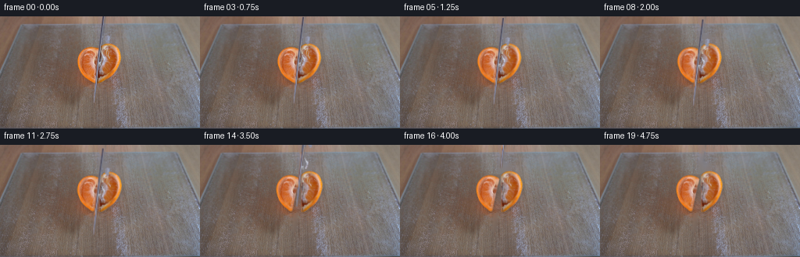
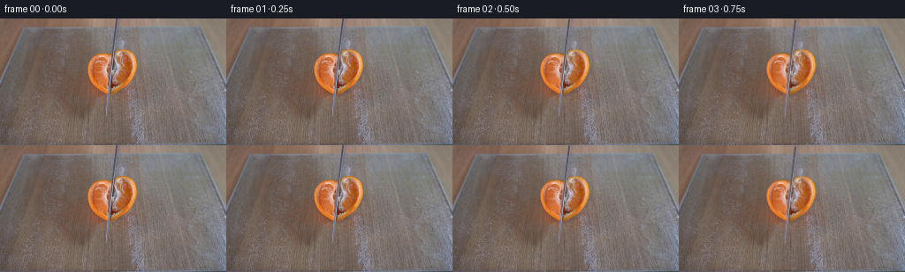

CODING AGENTS AS PIXEL WORLD MODELS
traex/GPT-6.1-Sol · 0041
点击播放 · 原生 RGB 像素
逐轮保存的候选
回放视频、检查图与代码变化。
每份候选均可单独播放。实际图片检查记录在下方工具轨迹中。
候选 01播放与检查图
点击播放 · 原生 RGB 像素

展开代码变化
--- 上一保存版本
+++ 本次保存版本
@@ -0,0 +1,183 @@
+from pathlib import Path
+import numpy as np
+from PIL import Image, ImageDraw
+import cv2
+from scipy.ndimage import gaussian_filter
+import artifact_io
+
+ROOT = Path(__file__).resolve().parent
+H,W=144,256
+Y,X=np.mgrid[:H,:W].astype(np.float32)
+
+def polygon(points):
+ s=4
+ p=Image.new('L',(W*s,H*s))
+ ImageDraw.Draw(p).polygon([(round(x*s),round(y*s)) for x,y in points],fill=255)
+ return np.asarray(p.resize((W,H),Image.Resampling.LANCZOS),dtype=np.float32)/255
+
+def smooth(a,b,t):
+ u=np.clip((t-a)/(b-a),0,1)
+ return u*u*(3-2*u)
+
+def composite(image,rgb,alpha):
+ return image*(1-alpha[...,None])+rgb*alpha[...,None]
+
+def warp(image,m):
+ return cv2.warpAffine(image,m,(W,H),flags=cv2.INTER_LINEAR,borderMode=cv2.BORDER_CONSTANT)
+
+def motion_matrix(cx,cy,angle,dx,dy,compress=1):
+ m=cv2.getRotationMatrix2D((cx,cy),angle,1).astype(np.float32)
+ m[1,:2]*=compress
+ m[1,2]=cy+(m[1,2]-cy)*compress
+ m[:,2]+=[dx,dy]
+ return m
+
+def main():
+ original=np.asarray(Image.open(ROOT/'first_frame.png').convert('RGB'))
+ src=original.astype(np.float32)
+ left=polygon([(116,38.8),(121,39.8),(125.7,41.4),(127.1,43),
+ (126.4,48),(125.8,54),(125.1,61),(124.6,67),(124,73),
+ (123.5,78),(123.0,84),(121.4,86.1),(118.3,84.6),
+ (115,82),(111.2,79.7),(108,76.8),(104.5,73.0),
+ (102.5,69),(100.4,64.2),(98.5,59.4),(98.4,54),
+ (99.5,49.4),(101.8,45.8),(104,43),(108,40.8),(113,39.1)])
+ right=polygon([(136,34.6),(141.7,34.8),(145.8,36.2),(149,38.4),
+ (152,41.7),(153.5,45.7),(154.4,49.5),(155,53.7),
+ (154.4,58.8),(152.4,63.1),(150.9,66.4),(148.1,70.8),
+ (145.2,74.6),(142.3,77.3),(138.8,79.8),(133.2,83.5),
+ (127,86.0),(123.2,85.6),(123.9,80),(124.8,73),
+ (125.6,66),(126.3,59),(127.1,52),(127.9,45),
+ (129,39),(131.1,36.9),(133.1,35.5)])
+ fruit=np.maximum(left,right)
+ center=132.05-.113*Y
+ # The blade is almost edge-on in this locked overhead view.
+ knife=polygon([(130.55,-3),(133.8,-3),(121.5,109.5),(120,111),(118.8,109.3)])
+ # Narrow, photographic specular patches on the far side of the steel.
+ blue=(src[:,:,2]-src[:,:,0]>6)&(src[:,:,2]-src[:,:,1]>5)
+ near=(X>center-1)&(X<center+12)&(Y>23)&(Y<73)
+ reflection=(blue&near).astype(np.float32)
+ reflection=cv2.GaussianBlur(reflection,(3,3),.42)
+ reflection*=((X>center+1.2)&(X<center+12)).astype(float)
+ knife=np.maximum(knife,reflection)
+ knife=np.clip(knife,0,1)
+
+ # Reconstruct only the surfaces hidden by the moving steel. No new scene
+ # content is introduced; local diffusion uses the source's surrounding RGB.
+ remove_blade=(knife>.06).astype(np.uint8)*255
+ no_blade=cv2.inpaint(original,remove_blade,3,cv2.INPAINT_TELEA).astype(np.float32)
+ # The cut exposes a thin pith lip at both knife-adjacent edges. Recover it
+ # from the existing pale membrane, rather than using a flat drawn color.
+ clean=no_blade.copy()
+ for yy in range(42,85):
+ kk=132.05-.113*yy
+ # A very small amount of pulp restitution in the formerly occluded band.
+ for xx in range(max(0,int(kk)-2),min(W,int(kk)+3)):
+ if fruit[yy,xx]>.55:
+ ix=int(np.clip(kk-4,0,W-1))
+ lip=src[yy,ix].copy()
+ if lip[0]-lip[2]<30:
+ lip=src[yy,max(0,ix-2)].copy()
+ if xx<kk:
+ mix=.33
+ else:
+ mix=.2
+ clean[yy,xx]=clean[yy,xx]*(1-mix)+lip*mix
+
+ # Fill the board under the orange from adjacent board texture. This field is
+ # only revealed at the cut and by a few pixels at the moving rind silhouettes.
+ union=np.maximum(fruit,knife)
+ bgmask=(union>.02).astype(np.uint8)
+ bgmask=cv2.dilate(bgmask,np.ones((3,3),np.uint8),iterations=1)
+ background=cv2.inpaint(original,bgmask*255,5,cv2.INPAINT_TELEA).astype(np.float32)
+ # Give the inside of the large hidden area the same fine glass/wood texture
+ # as its neighboring rows, not the flat texture of a wide diffusion fill.
+ for yy in range(34,89):
+ cols=np.where(fruit[yy]>.02)[0]
+ if not len(cols): continue
+ a,b=cols[0],cols[-1]
+ c0=np.mean(src[yy,max(a-7,0):max(a-2,1)],axis=0)
+ c1=np.mean(src[yy,min(b+3,W-1):min(b+9,W)],axis=0)
+ for xx in range(a,b+1):
+ u=(xx-a)/max(1,b-a)
+ base=c0*(1-u)+c1*u
+ tx=177+(xx-a)%44
+ tex=src[yy,tx]-np.mean(src[yy,max(tx-3,0):min(tx+4,W)],axis=0)
+ fill=base+.7*tex
+ # Avoid any dark or pale knife remnants under the slit.
+ background[yy,xx]=fill
+ # A clean photographic starting layer allows the first fractional movement
+ # to retain the source's exact details wherever they have not been occluded.
+ left_rgb=clean.copy(); right_rgb=clean.copy()
+ # Premultiplication makes the extracted, antialiased rind edges move cleanly.
+ lp=left_rgb*left[...,None]
+ rp=right_rgb*right[...,None]
+ kp=src*knife[...,None]
+
+ frames=[original.copy()]
+ for i in range(1,20):
+ t=i/4
+ penetration=smooth(.1,2.55,t)
+ release=smooth(2.55,3.5,t)
+ # Small elastic pressure followed by two quarters sliding apart on glass.
+ separation=2.25*penetration+3.4*release
+ settle=smooth(3.5,4.45,t)
+ ldx=-separation*.84
+ rdx=separation*1.1
+ la=-(3.8*penetration+3.0*release)
+ ra=3.0*penetration+4.6*release
+ bounce=.35*np.exp(-4*max(0,t-3.15))*np.sin(12*max(0,t-3.15))
+ ml=motion_matrix(123,83,la,ldx,.20*release+bounce,1-.012*penetration*(1-release))
+ mr=motion_matrix(125,84,ra,rdx,.25*release-bounce,1-.008*penetration*(1-release))
+ al=warp(left,ml); ar=warp(right,mr)
+ cl=warp(lp,ml); cr=warp(rp,mr)
+ # Transport subtle contact shadows with each piece. Source shadows under
+ # the initial position remain useful for the newly visible moist slit.
+ im=background.copy()
+ for a in [al,ar]:
+ sh=cv2.warpAffine(a,np.array([[1,0,.5],[0,1,1.4]],np.float32),(W,H))
+ sh=gaussian_filter(sh,1.5)
+ edge=np.clip(sh-a,0,1)
+ im*=1-.16*edge[...,None]
+ im=im*(1-ar[...,None])+cr
+ im=im*(1-al[...,None])+cl
+ # The longitudinal drawing stroke pushes through the last rind, pauses
+ # at the glass, and then the knife is withdrawn along the same axis.
+ down=4.6*penetration
+ withdrawal=121*smooth(2.85,4.65,t)
+ dy=down-withdrawal
+ dx=-.113*dy
+ # Minute blade rocking during the cutting stroke, no camera motion.
+ rock=.22*np.sin(t*5.5)*penetration*(1-smooth(2.5,3,t))
+ mk=np.array([[1,0,dx+rock],[0,1,dy]],np.float32)
+ ak=warp(knife,mk)
+ ck=warp(kp,mk)
+ # Contact is firm until the cut has fully cleared; after that the shaft
+ # progressively exits the top of the frame.
+ im=im*(1-ak[...,None])+ck
+ # Local layer-restoration residual at the original configuration keeps
+ # the transition from the required first frame soft and photographic.
+ if t<.65:
+ initial=background.copy()
+ initial=initial*(1-right[...,None])+rp
+ initial=initial*(1-left[...,None])+lp
+ initial=initial*(1-knife[...,None])+kp
+ correction=src-initial
+ im+=correction*(1-smooth(0,.65,t))
+ frames.append(np.clip(np.rint(im),0,255).astype(np.uint8))
+ frames=np.stack(frames)
+ artifact_io.save(frames,ROOT)
+ # A standard RGB video in addition to the required lossless tensor/player.
+ try:
+ import subprocess
+ subprocess.run(['ffmpeg','-y','-loglevel','error','-f','rawvideo',
+ '-pixel_format','rgb24','-video_size','256x144',
+ '-framerate','4','-i','-','-an','-c:v','libx264',
+ '-crf','16','-pix_fmt','yuv420p',str(ROOT/'video.mp4')],
+ input=frames.tobytes(),check=True)
+ except (FileNotFoundError,subprocess.CalledProcessError):
+ pass
+ assert np.array_equal(frames[0],original)
+ print('Saved',frames.shape,frames.dtype,'to',ROOT)
+
+if __name__=='__main__':
+ main()
候选 02播放与检查图
点击播放 · 原生 RGB 像素

展开代码变化
--- 上一保存版本
+++ 本次保存版本
@@ -83,6 +83,15 @@
mix=.2
clean[yy,xx]=clean[yy,xx]*(1-mix)+lip*mix
+ # Restitute the warm pulp color beneath cool steel reflections. Luminance
+ # and source microtexture remain intact, while the steel's blue cast does
+ # not remain painted onto the fruit after the knife has been withdrawn.
+ pulp_region=(fruit>.5)&(Y>35)&(Y<79)&(X>center-1.0)&(X<center+10)
+ cool_pulp=pulp_region&((clean[:,:,2]>clean[:,:,0]-4)|
+ (clean[:,:,2]>clean[:,:,1]+4))
+ clean[cool_pulp]+=np.array([26,11,-4],np.float32)
+ clean=np.clip(clean,0,255)
+
# Fill the board under the orange from adjacent board texture. This field is
# only revealed at the cut and by a few pixels at the moving rind silhouettes.
union=np.maximum(fruit,knife)
@@ -120,7 +129,6 @@
release=smooth(2.55,3.5,t)
# Small elastic pressure followed by two quarters sliding apart on glass.
separation=2.25*penetration+3.4*release
- settle=smooth(3.5,4.45,t)
ldx=-separation*.84
rdx=separation*1.1
la=-(3.8*penetration+3.0*release)
@@ -142,7 +150,7 @@
im=im*(1-al[...,None])+cl
# The longitudinal drawing stroke pushes through the last rind, pauses
# at the glass, and then the knife is withdrawn along the same axis.
- down=4.6*penetration
+ down=8.5*penetration
withdrawal=121*smooth(2.85,4.65,t)
dy=down-withdrawal
dx=-.113*dy
候选 03播放与检查图
候选 04播放与检查图
点击播放 · 原生 RGB 像素

展开代码变化
--- 上一保存版本
+++ 本次保存版本
@@ -183,7 +183,12 @@
'-crf','16','-pix_fmt','yuv420p',str(ROOT/'video.mp4')],
input=frames.tobytes(),check=True)
except (FileNotFoundError,subprocess.CalledProcessError):
- pass
+ writer=cv2.VideoWriter(str(ROOT/'video.mp4'),
+ cv2.VideoWriter_fourcc(*'mp4v'),4,(W,H))
+ if writer.isOpened():
+ for frame in frames:
+ writer.write(cv2.cvtColor(frame,cv2.COLOR_RGB2BGR))
+ writer.release()
assert np.array_equal(frames[0],original)
print('Saved',frames.shape,frames.dtype,'to',ROOT)
可观测工具轨迹
实际执行的命令与返回图片。
命令 1exit 0
/bin/bash -lc 'ls -la && cat prompt.txt && cat GENERATION_RULES.md'
命令 2exit 0
/bin/bash -lc "cat artifact_io.py && python - <<'PY'
from PIL import Image
import numpy as np
im=np.array(Image.open('first_frame.png'))
print(im.shape)
for y in range(0,144,6):
print(f'{y:3d}', ' '.join('%02x%02x%02x'%tuple(im[y,x,:3]) for x in range(0,256,8)))
PY"命令 3exit 0
/bin/bash -lc "python - <<'PY'
from PIL import Image
import numpy as np
im=np.array(Image.open('first_frame.png')).astype(float)
for y in range(6,96,2):
s=''
for x in range(88,170,2):
r,g,b=im[y:y+2,x:x+2].mean((0,1));
c=' '
if r>180 and r>g*1.3 and g>b*1.45: c='O' if g>105 else 'o'
elif r>140 and r>g*1.15 and g>b*1.04: c='S'
elif r>140 and r>g*1.05: c='s'
elif b>r*1.04: c='M' if r>100 else 'm'
elif max(r,g,b)-min(r,g,b)<12: c='=' if r>135 else '-'
elif r<85: c='#'
else:c='.'
s+=c
print(f'{y:3d} {s}')
print('Exact points knife')
for y in range(8,91,4):
print(y,[(x,tuple(im[y,x].astype(int))) for x in range(116,143,2)])
PY"命令 4exit 0
/bin/bash -lc "python - <<'PY'
from PIL import Image
import numpy as np
im=np.array(Image.open('first_frame.png')).astype(float)
# light value map full frame 128x72
chars=' .,:;irsXA253hMHGS#9B&@'
for y in range(0,144,2):
rgb=im[y:y+2].reshape(2,128,2,3).mean((0,2)); v=rgb.mean(1)
print(f'{y:3d} '+''.join(chars[min(len(chars)-1,int(a/256*len(chars)))] for a in v))
print('Locations of blue metal at all heights')
for y in range(0,143,3):
p=im[y]; sel=np.where((p[:,2]-p[:,0]>8)&(p[:,2]-p[:,1]>6))[0];
print(y,sel.tolist())
PY"命令 5exit 0
/bin/bash -lc "python - <<'PY'
from PIL import Image
import numpy as np
im=np.array(Image.open('first_frame.png')).astype(float)
for y in range(30,92):
a=im[y]; x=np.where((a[:,0]>145)&(a[:,0]-a[:,1]>38)&(a[:,1]-a[:,2]>18)&(np.arange(256)>90)&(np.arange(256)<170))[0]
print(y, x.tolist())
print('knife columns')
for y in range(0,115,2):
a=im[y,117:139]; print(y,' '.join(f'{i+117}:{int(c[0])},{int(c[1])},{int(c[2])}' for i,c in enumerate(a)))
PY"命令 6exit 0
/bin/bash -lc "python - <<'PY'
import cv2, scipy
print(cv2.__version__,scipy.__version__)
from PIL import Image
import numpy as np
im=np.array(Image.open('first_frame.png'))
# classify crop into pale pulp, orange rind, metal and background
for y in range(32,88):
s=''
for x in range(96,158):
r,g,b=im[y,x].astype(float)
if b-r>6 and b-g>6:c='|' if b>130 else '"'!'"'
elif r-g>65 and g-b>35:c='O' if r>208 else 'o'
elif r-g>45 and g-b>18:c='p' if r>185 else 'q'
elif r-g>25 and r>165:c=':' if r>215 else ';'
elif r>170 and b<g:c='w'
elif r<90:c='#'
elif max(r,g,b)-min(r,g,b)<20:c='=' if r>160 else '-'
else:c='.'
s+=c
print(f'{y:3d} {s}')
PY"命令 7exit 0
/bin/bash -lc "python - <<'PY'
from PIL import Image
import numpy as np
im=np.array(Image.open('first_frame.png')).astype(float)
# row values across outer silhouette, to precisely segment
for y in [33,34,35,36,37,38,39,40,41,42,45,50,55,60,65,70,75,80,85,86]:
print(y, ' '.join(f'{x}:{tuple(im[y,x].astype(int))}' for x in range(96,158)))
PY"命令 8exit 0
/bin/bash -lc "python - <<'PY'
from PIL import Image
import numpy as np
im=np.array(Image.open('first_frame.png')).astype(float)
for y in range(32,88):
a=im[y];
sel=np.where((a[:,0]>143)&(a[:,0]-a[:,1]>35)&(a[:,1]-a[:,2]>18)&(np.arange(256)>96)&(np.arange(256)<158))[0]
print(y, (min(sel),max(sel)) if len(sel) else None)
PY"命令 9exit 0
/bin/bash -lc "python - <<'PY'
from PIL import Image
import numpy as np
im=np.array(Image.open('first_frame.png')).astype(int)
for y in range(0,113):
k=132.2-.112*y
lo=int(np.floor(k))-2; hi=int(np.floor(k))+4
if y%3==0 or y>=103:
print(f'{y:3} expected {k:6.2f}:',' '.join(f'{x}:({im[y,x,0]},{im[y,x,1]},{im[y,x,2]})' for x in range(lo,hi)))
PY"命令 10exit 0
/bin/bash -lc "cat > generate.py <<'PY'
from pathlib import Path
import numpy as np
from PIL import Image, ImageDraw
import cv2
from scipy.ndimage import gaussian_filter
import artifact_io
ROOT = Path(__file__).resolve().parent
H,W=144,256
Y,X=np.mgrid[:H,:W].astype(np.float32)
def polygon(points):
s=4
p=Image.new('L',(W*s,H*s))
ImageDraw.Draw(p).polygon([(round(x*s),round(y*s)) for x,y in points],fill=255)
return np.asarray(p.resize((W,H),Image.Resampling.LANCZOS),dtype=np.float32)/255
def smooth(a,b,t):
u=np.clip((t-a)/(b-a),0,1)
return u*u*(3-2*u)
def composite(image,rgb,alpha):
return image*(1-alpha[...,None])+rgb*alpha[...,None]
def warp(image,m):
return cv2.warpAffine(image,m,(W,H),flags=cv2.INTER_LINEAR,borderMode=cv2.BORDER_CONSTANT)
def motion_matrix(cx,cy,angle,dx,dy,compress=1):
m=cv2.getRotationMatrix2D((cx,cy),angle,1).astype(np.float32)
m[1,:2]*=compress
m[1,2]=cy+(m[1,2]-cy)*compress
m[:,2]+=[dx,dy]
return m
def main():
original=np.asarray(Image.open(ROOT/'first_frame.png').convert('RGB'))
src=original.astype(np.float32)
left=polygon([(116,38.8),(121,39.8),(125.7,41.4),(127.1,43),
(126.4,48),(125.8,54),(125.1,61),(124.6,67),(124,73),
(123.5,78),(123.0,84),(121.4,86.1),(118.3,84.6),
(115,82),(111.2,79.7),(108,76.8),(104.5,73.0),
(102.5,69),(100.4,64.2),(98.5,59.4),(98.4,54),
(99.5,49.4),(101.8,45.8),(104,43),(108,40.8),(113,39.1)])
right=polygon([(136,34.6),(141.7,34.8),(145.8,36.2),(149,38.4),
(152,41.7),(153.5,45.7),(154.4,49.5),(155,53.7),
(154.4,58.8),(152.4,63.1),(150.9,66.4),(148.1,70.8),
(145.2,74.6),(142.3,77.3),(138.8,79.8),(133.2,83.5),
(127,86.0),(123.2,85.6),(123.9,80),(124.8,73),
(125.6,66),(126.3,59),(127.1,52),(127.9,45),
(129,39),(131.1,36.9),(133.1,35.5)])
fruit=np.maximum(left,right)
center=132.05-.113*Y
# The blade is almost edge-on in this locked overhead view.
knife=polygon([(130.55,-3),(133.8,-3),(121.5,109.5),(120,111),(118.8,109.3)])
# Narrow, photographic specular patches on the far side of the steel.
blue=(src[:,:,2]-src[:,:,0]>6)&(src[:,:,2]-src[:,:,1]>5)
near=(X>center-1)&(X<center+12)&(Y>23)&(Y<73)
reflection=(blue&near).astype(np.float32)
reflection=cv2.GaussianBlur(reflection,(3,3),.42)
reflection*=((X>center+1.2)&(X<center+12)).astype(float)
knife=np.maximum(knife,reflection)
knife=np.clip(knife,0,1)
# Reconstruct only the surfaces hidden by the moving steel. No new scene
# content is introduced; local diffusion uses the source's surrounding RGB.
remove_blade=(knife>.06).astype(np.uint8)*255
no_blade=cv2.inpaint(original,remove_blade,3,cv2.INPAINT_TELEA).astype(np.float32)
# The cut exposes a thin pith lip at both knife-adjacent edges. Recover it
# from the existing pale membrane, rather than using a flat drawn color.
clean=no_blade.copy()
for yy in range(42,85):
kk=132.05-.113*yy
# A very small amount of pulp restitution in the formerly occluded band.
for xx in range(max(0,int(kk)-2),min(W,int(kk)+3)):
if fruit[yy,xx]>.55:
ix=int(np.clip(kk-4,0,W-1))
lip=src[yy,ix].copy()
if lip[0]-lip[2]<30:
lip=src[yy,max(0,ix-2)].copy()
if xx<kk:
mix=.33
else:
mix=.2
clean[yy,xx]=clean[yy,xx]*(1-mix)+lip*mix
# Fill the board under the orange from adjacent board texture. This field is
# only revealed at the cut and by a few pixels at the moving rind silhouettes.
union=np.maximum(fruit,knife)
bgmask=(union>.02).astype(np.uint8)
bgmask=cv2.dilate(bgmask,np.ones((3,3),np.uint8),iterations=1)
background=cv2.inpaint(original,bgmask*255,5,cv2.INPAINT_TELEA).astype(np.float32)
# Give the inside of the large hidden area the same fine glass/wood texture
# as its neighboring rows, not the flat texture of a wide diffusion fill.
for yy in range(34,89):
cols=np.where(fruit[yy]>.02)[0]
if not len(cols): continue
a,b=cols[0],cols[-1]
c0=np.mean(src[yy,max(a-7,0):max(a-2,1)],axis=0)
c1=np.mean(src[yy,min(b+3,W-1):min(b+9,W)],axis=0)
for xx in range(a,b+1):
u=(xx-a)/max(1,b-a)
base=c0*(1-u)+c1*u
tx=177+(xx-a)%44
tex=src[yy,tx]-np.mean(src[yy,max(tx-3,0):min(tx+4,W)],axis=0)
fill=base+.7*tex
# Avoid any dark or pale knife remnants under the slit.
background[yy,xx]=fill
# A clean photographic starting layer allows the first fractional movement
# to retain the source's exact details wherever they have not been occluded.
left_rgb=clean.copy(); right_rgb=clean.copy()
# Premultiplication makes the extracted, antialiased rind edges move cleanly.
lp=left_rgb*left[...,None]
rp=right_rgb*right[...,None]
kp=src*knife[...,None]
frames=[original.copy()]
for i in range(1,20):
t=i/4
penetration=smooth(.1,2.55,t)
release=smooth(2.55,3.5,t)
# Small elastic pressure followed by two quarters sliding apart on glass.
separation=2.25*penetration+3.4*release
settle=smooth(3.5,4.45,t)
ldx=-separation*.84
rdx=separation*1.1
la=-(3.8*penetration+3.0*release)
ra=3.0*penetration+4.6*release
bounce=.35*np.exp(-4*max(0,t-3.15))*np.sin(12*max(0,t-3.15))
ml=motion_matrix(123,83,la,ldx,.20*release+bounce,1-.012*penetration*(1-release))
mr=motion_matrix(125,84,ra,rdx,.25*release-bounce,1-.008*penetration*(1-release))
al=warp(left,ml); ar=warp(right,mr)
cl=warp(lp,ml); cr=warp(rp,mr)
# Transport subtle contact shadows with each piece. Source shadows under
# the initial position remain useful for the newly visible moist slit.
im=background.copy()
for a in [al,ar]:
sh=cv2.warpAffine(a,np.array([[1,0,.5],[0,1,1.4]],np.float32),(W,H))
sh=gaussian_filter(sh,1.5)
edge=np.clip(sh-a,0,1)
im*=1-.16*edge[...,None]
im=im*(1-ar[...,None])+cr
im=im*(1-al[...,None])+cl
# The longitudinal drawing stroke pushes through the last rind, pauses
# at the glass, and then the knife is withdrawn along the same axis.
down=4.6*penetration
withdrawal=121*smooth(2.85,4.65,t)
dy=down-withdrawal
dx=-.113*dy
# Minute blade rocking during the cutting stroke, no camera motion.
rock=.22*np.sin(t*5.5)*penetration*(1-smooth(2.5,3,t))
mk=np.array([[1,0,dx+rock],[0,1,dy]],np.float32)
ak=warp(knife,mk)
ck=warp(kp,mk)
# Contact is firm until the cut has fully cleared; after that the shaft
# progressively exits the top of the frame.
im=im*(1-ak[...,None])+ck
# Local layer-restoration residual at the original configuration keeps
# the transition from the required first frame soft and photographic.
if t<.65:
initial=background.copy()
initial=initial*(1-right[...,None])+rp
initial=initial*(1-left[...,None])+lp
initial=initial*(1-knife[...,None])+kp
correction=src-initial
im+=correction*(1-smooth(0,.65,t))
frames.append(np.clip(np.rint(im),0,255).astype(np.uint8))
frames=np.stack(frames)
artifact_io.save(frames,ROOT)
# A standard RGB video in addition to the required lossless tensor/player.
try:
import subprocess
subprocess.run(['ffmpeg','-y','-loglevel','error','-f','rawvideo',
'-pixel_format','rgb24','-video_size','256x144',
'-framerate','4','-i','-','-an','-c:v','libx264',
'-crf','16','-pix_fmt','yuv420p',str(ROOT/'video.mp4')],
input=frames.tobytes(),check=True)
except (FileNotFoundError,subprocess.CalledProcessError):
pass
assert np.array_equal(frames[0],original)
print('Saved',frames.shape,frames.dtype,'to',ROOT)
if __name__=='__main__':
main()
PY
python generate.py"命令 11exit 0
/bin/bash -lc "python - <<'PY'
from PIL import Image
import numpy as np
src=np.array(Image.open('first_frame.png')).astype(float)
for i in [1,4,8,12,16,19]:
im=np.array(Image.open(f'frames/{i:02d}.png')).astype(float)
d=np.abs(im-src).max(2)
print(i,'mean',np.mean(d),'changed',np.sum(d>10),'bbox',(np.where(d>10)[1].min(),np.where(d>10)[0].min(),np.where(d>10)[1].max(),np.where(d>10)[0].max()))
if i in [1,12,19]:
for y in range(32,90,2):
s=''
for x in range(94,166):
r,g,b=im[y,x]
if b-r>6 and b-g>6:c='|' if b>130 else '"'!'"'
elif r-g>65 and g-b>35:c='O' if r>208 else 'o'
elif r-g>45 and g-b>18:c='p' if r>185 else 'q'
elif r-g>25 and r>165:c=':' if r>215 else ';'
elif r>170 and b<g:c='w'
elif r<90:c='#'
elif max(r,g,b)-min(r,g,b)<20:c='=' if r>160 else '-'
else:c='.'
s+=c
print(y,s)
PY"命令 12exit 0
/bin/bash -lc "python - <<'PY'
from PIL import Image
import numpy as np
im=np.array(Image.open('frames/19.png')).astype(int)
# measure cut slit and color normal to edges
for y in [40,50,60,70,80]:
print(y,[(x, tuple(map(int,im[y,x]))) for x in range(114,145)])
PY"命令 13exit 2
/bin/bash -lc "python generate.py && python - <<'PY'
import numpy as np
from PIL import Image
from pathlib import Path
p=np.load('pixels.npz')['pixels']
a=np.array(Image.open('first_frame.png').convert('RGB'),dtype=np.uint32)
packed=(a[:,:,0]<<16)|(a[:,:,1]<<8)|a[:,:,2]
assert p.shape==(144,256,20)
assert np.array_equal(p[:,:,0],packed)
assert len(list(Path('frames').glob('*.png')))==20
print('Verified 20 RGB frames and pixel-identical first frame.')
PY
ffprobe -v error -select_streams v:0 -show_entries stream=width,height,r_frame_rate,nb_frames,duration -of default=noprint_wrappers=1 video.mp4
ls -lh pixels.npz video.mp4 index.html"命令 14exit 0
/bin/bash -lc "python generate.py && python - <<'PY'
import cv2
c=cv2.VideoCapture('video.mp4')
print('Video:',c.get(cv2.CAP_PROP_FRAME_COUNT),'frames,',c.get(cv2.CAP_PROP_FPS),'fps,',int(c.get(3)),int(c.get(4)))
c.release()
PY"保存候选 4 份；完成命令 14 次；可验证图片返回 0 张。原始 API 响应与完整日志保留在本地。